The Science of Color & Light
Newton's Optical Discovery (1666): The Visible Spectrum
Color does not physically reside within objects; it is an optical phenomenon. In 1666, Sir Isaac Newton passed sunlight through a glass prism, proving that pure white light is composed of the visible electromagnetic spectrum: Red (700 nm) through Violet (380 nm). An apple appears red solely because its surface molecules reflect 700 nm wavelengths while absorbing all others.
Trichromatic Vision: Cones, Rods & Optical Synthesis
Human retinas process visual reality through two photoreceptor types: 120 million Rods (light intensity/night vision) and 6 to 7 million Cones (chromatic acuity). Humans possess Trichromatic vision with three cone classes: L-cones (Red), M-cones (Green), and S-cones (Blue). The visual cortex blends these three bio-electrical signals into millions of perceivable color nuances.
Classroom Checkpoint: The Metamerism Paradox
Why does a printed brand logo match perfectly under office fluorescent lighting, but shifts noticeably under outdoor natural sunlight?
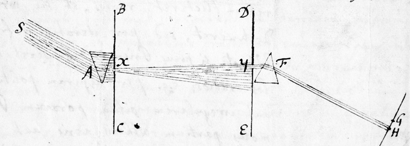
The Anatomy of the Color Wheel
The 3 Architectural Tiers of the 12-Part Wheel
The traditional artist's wheel organizes 12 fundamental hues into a circular continuum: 1) Primaries [Red, Yellow, Blue] which cannot be produced by mixing; 2) Secondaries [Orange, Green, Violet] formed by equal 50/50 parts of two primaries; and 3) Tertiaries [Red-Orange, Yellow-Orange, Yellow-Green, Blue-Green, Blue-Violet, Red-Violet] formed by pairing a primary with an adjacent secondary.
Bauhaus Legacy: Johannes Itten's 1961 Farbkreis
Formalized at the Weimar Bauhaus design school, painter Johannes Itten created the 12-part color sphere to teach students spatial relationships between hues. Itten recognized that geometric positioning dictates psychological contrast, allowing artists to anticipate visual vibration before putting brush to canvas.
Classroom Checkpoint: The RYB vs. CMY Pigment Revolution
Why did classical renaissance masters use Red, Yellow, and Blue as primaries, while modern commercial printers use Cyan, Magenta, and Yellow?
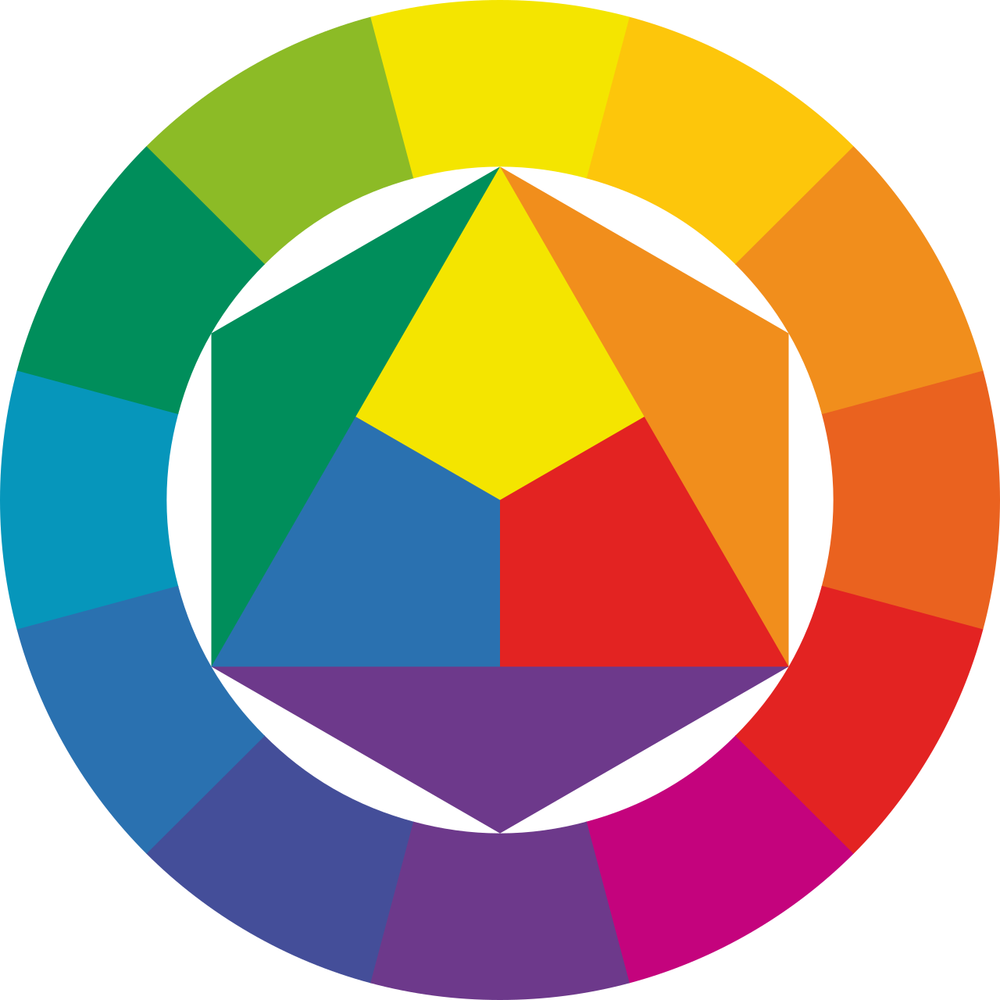
The 3 Dimensions: Hue, Saturation & Value
The HSV / HSB Cylindrical Coordinates
Every color on earth requires three coordinates to define: 1) Hue (0°–360°): The pure wavelength family along the circle; 2) Saturation / Chroma (0%–100%): The purity or vividness of the hue, where 0% is dull gray and 100% is intense pigment; 3) Value / Brightness (0%–100%): The relative luminance from absolute black (0%) to full illumination (100%).
Albert Munsell's 3D Color Tree (1900)
American artist Albert Munsell recognized that color is not a flat disk. Because human eyes perceive different colors reaching maximum chroma at differing lightness levels (pure yellow is naturally bright, whereas pure ultramarine is naturally deep), Munsell mapped color onto an asymmetrical 3D tree that remains the bedrock of US industrial standards.
Classroom Checkpoint: The Senior Art Director's Grayscale Test
What is the fastest professional technique to determine whether a complex web interface has successful visual hierarchy and contrast?
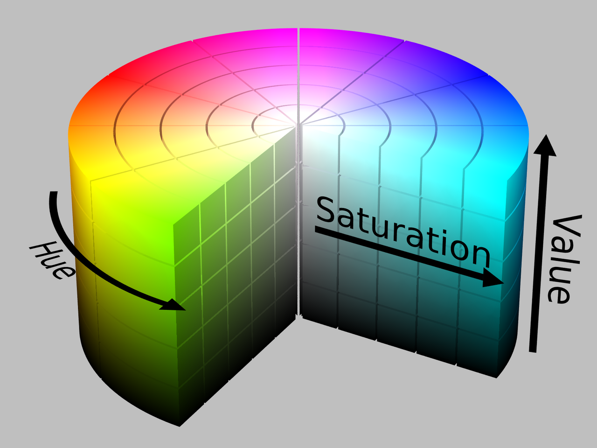
Tints, Shades & Tones
The 3 Modulation Formulations
Modulating a base hue requires specific additives: 1) Tint = Base Hue + White: Elevates value, reduces saturation, creating gentle pastels and airy atmospheric tints; 2) Shade = Base Hue + Black: Lowers value, creating dramatic, rich, authoritative shadows; 3) Tone = Base Hue + Gray: Desaturates chroma without moving to pure black or white, producing sophisticated, vintage, and earthy palettes.
Digital UI Token Scales (50 to 900)
In production design systems (Tailwind, Figma tokens, Google Material), colors are engineered into 10-step numerical scales (50, 100, 200... 900). Steps 50–300 are Tints used for backgrounds and active hover states; step 500 is the pure brand Hue; steps 700–900 are Shades used for accessible typography and dark mode surfaces.
Classroom Checkpoint: The 'Muddy Shadow' Rookie Mistake
Why should digital artists and illustrators never create shadow tones by simply blending pure black (#000000) over a color?
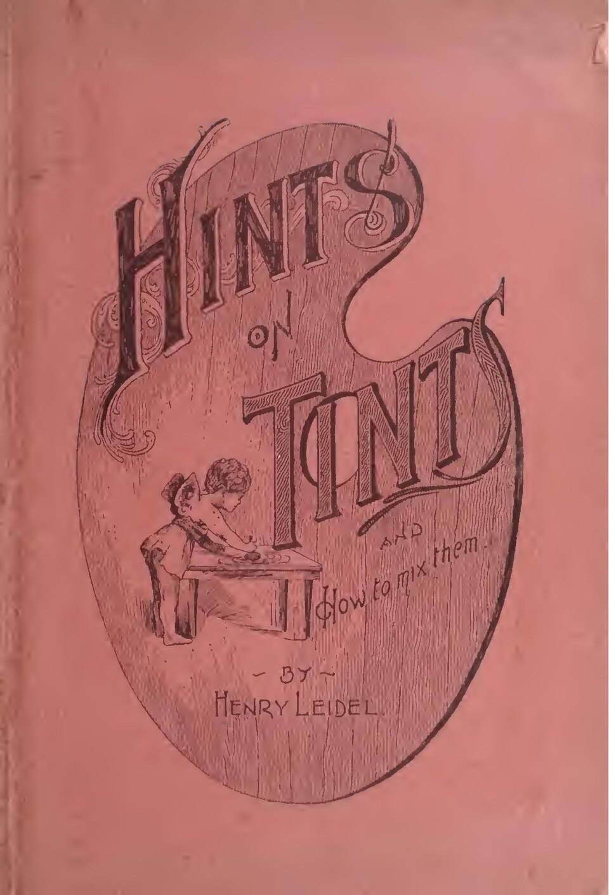
Warm vs. Cool: Psychological Temperature
The Thermal Division & Optical Illusions
Dividing the 12-part wheel down the center creates two psychological zones: Warm Colors (Reds, Oranges, Yellows) and Cool Colors (Blues, Greens, Violets). Warm colors physiologically increase pulse rates and create the optical illusion of advancing forward toward the viewer. Cool colors evoke calm and appear to recede backward into depth.
Atmospheric Perspective in Art & UI Design
Impressionist master Claude Monet utilized warm oranges against misty cool blues in 'Impression, Sunrise' to capture the luminous morning dawn. UI designers harness this exact principle: critical Call-to-Action buttons and warning toasts use warm advancing tones, while cool slate backgrounds recede unobtrusively.
Classroom Checkpoint: The Astrophysics vs. Human Psychology Paradox
In astrophysics, blue stars (25,000K) are intensely hotter than red stars (3,000K). Why does human psychology perceive red as scorching hot and blue as freezing cold?

Complementary & Analogous Harmonies
Complementary Harmony (180° Direct Opposites)
Colors placed 180° directly opposite on the wheel (Blue + Orange, Red + Green, Yellow + Violet). Generates maximum simultaneous contrast: each hue makes its partner appear more vibrant and luminous. Ideal for focal Call-to-Action buttons, sports branding (Knicks, Mets), and high-energy movie posters.
Analogous Harmony (30°–60° Adjacent Neighbors)
Three to five colors sitting side-by-side along the circle (e.g., Yellow, Yellow-Green, Green). Because they share a common root wavelength, analogous palettes produce organic unity, zero chromatic friction, and soothing visual comfort. Abundantly found in landscapes, forest canopies, and serene brand identities (BP, Mastercard).
Classroom Checkpoint: The Hollywood 'Teal & Orange' Phenomenon
Why do over 80% of Hollywood blockbuster movies (Transformers, Mad Max, Marvel films) grade their film scenes in teal and orange?
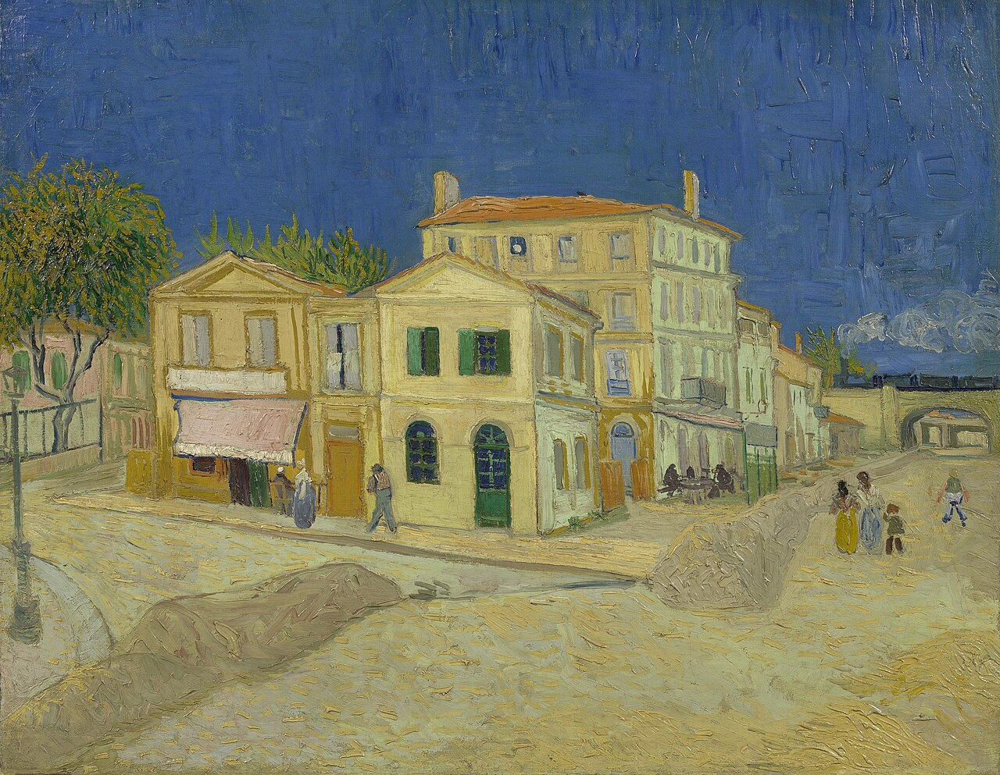
Monochromatic, Triadic & Tetradic Harmonies
Monochromatic & Triadic Geometries
Monochromatic uses a single hue varied exclusively through tints, shades, and tones; impossible to clash, imparting supreme elegance (Picasso's Blue Period). Triadic places an equilateral triangle (120° apart) on the wheel (Red, Yellow, Blue). It delivers vibrant kinetic energy while preserving optical equilibrium (Piet Mondrian, Superman comic books).
Tetradic (Double-Complementary) Schemes
Tetradic harmonies link four colors composed of two complementary pairs (forming a rectangle or square). It offers the richest chromatic variety of any color scheme, making it a staple of vibrant retail packaging. To avoid visual chaos, designers must allow one color to dominate, using the remaining three as supporting accents.
Classroom Checkpoint: The Mondrian Constraint
How did Dutch master Piet Mondrian revolutionize modern graphic design by using only the primary triad (Red, Yellow, Blue) with black grids?
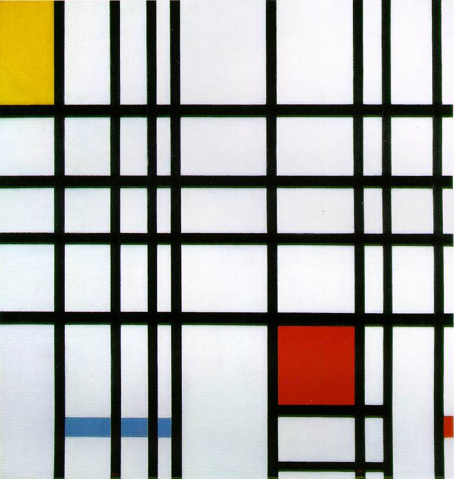
RGB Color Model: Additive Light
The Additive Mechanism: Emitting Photons
Digital displays begin in absolute darkness (Black = #000000). By emitting colored photons from microscopic Red, Green, and Blue subpixels at varying channel intensities (0 to 255), monitors stimulate retinal cones. Combining all three at maximum intensity produces pure luminous White (255, 255, 255). Used for web, mobile apps, video, and UI.
8-Bit Truecolor & Hexadecimal Math
Digital screens store color in 8 bits per channel (2^8 = 256 levels). Multiplying 256 Red x 256 Green x 256 Blue yields 16.7 million distinct colors. Web developers represent this via Hex codes (#RRGGBB): #FF0000 is 100% Red, #00FF00 is 100% Green, and #FFFF00 combines red and green light into pure electric yellow.
Classroom Checkpoint: The Yellow Light Optical Deception
Your smartphone screen contains only physical Red, Green, and Blue light LEDs—no yellow pixels exist. How do you see vivid yellow on screen?
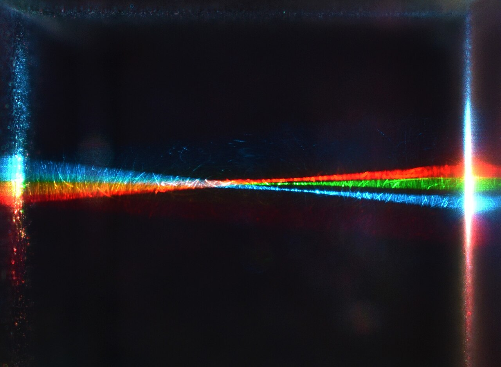
CMYK Color Model: Subtractive Inks
The Subtractive Mechanism: Absorbing Wavelengths
Printing begins on white paper that reflects ambient room illumination. Applied translucent inks act as chemical light filters: Cyan ink subtracts (absorbs) red wavelengths; Magenta ink subtracts green; Yellow ink subtracts blue. Overlapping all three inks subtracts all light, theoretically yielding black.
Why Key Black (K) is Mandatory
Because chemical ink pigments contain microscopic impurities, blending 100% C + 100% M + 100% Y produces a muddy, murky brown rather than deep pitch black. A fourth plate—Key Black (K)—is essential for crisp typographic legibility, rich shadow contrast, and dramatic cost savings on commercial presses.
Classroom Checkpoint: The Total Area Coverage (TAC) Disaster
What catastrophic physical failure occurs if a graphic designer submits a print file containing 100% C, 100% M, 100% Y, and 100% K (400% ink)?
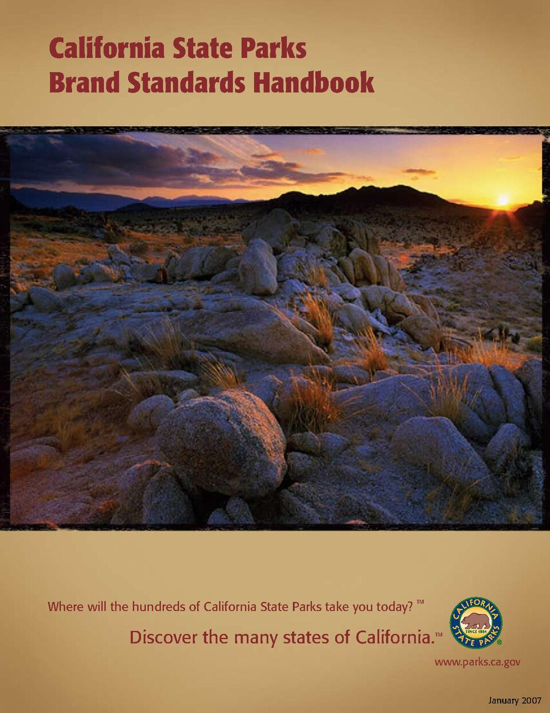
RGB vs. CMYK: The Gamut Wall & Workflow
The Color Gamut Mismatch
A 'gamut' represents the complete palette spectrum a given device can physically reproduce. The human eye's visible spectrum is largest; the digital sRGB screen gamut is medium; the physical CMYK print gamut is significantly narrower. Glowing electric limes, neon magentas, and deep vibrant blues exist in RGB light but are physically impossible to mix with CMYK process inks.
Pantone (PMS) Spot Colors: The 5th Ink Station
When a brand identity demands a specific vibrant color (e.g., Tiffany Blue, Coca-Cola Red, metallic gold) that CMYK cannot achieve, designers specify a Pantone Matching System (PMS) spot color. Spot inks are pre-mixed chemical formulas poured into a dedicated 5th printing unit for 100% universal accuracy worldwide.
Classroom Checkpoint: The Adobe Photoshop Gamut Warning
What does the yellow warning triangle with an exclamation point mean when selecting colors inside Adobe Photoshop?
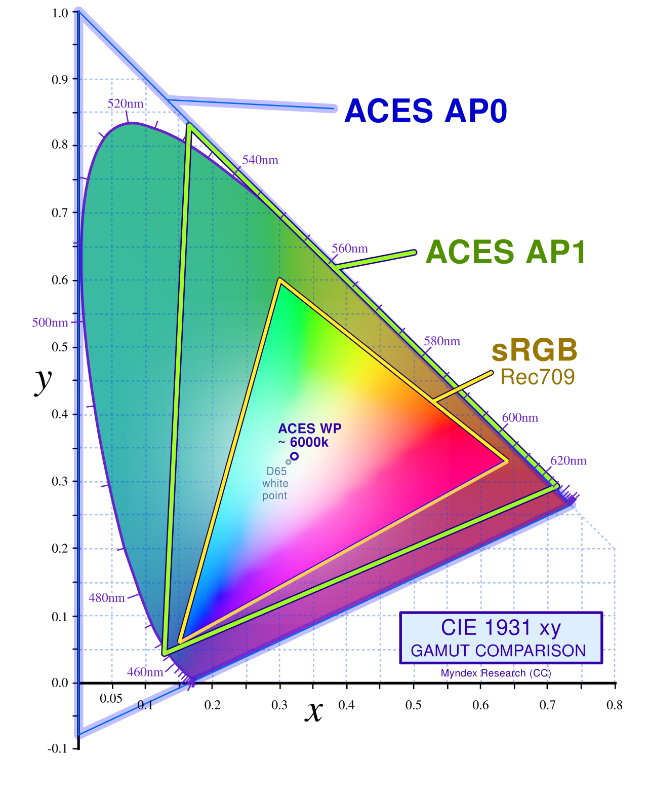
Color Psychology: Emotional Triggers
The Subconscious 90-Second Snap Judgment
Academic marketing research proves that up to 90% of a consumer's snap judgment about a product or digital brand is based on color alone. Color acts as an emotional shortcut that bypasses analytical thought: Red triggers physical arousal and appetite (Netflix, Coca-Cola); Blue communicates security, corporate logic, and institutional trust (IBM, PayPal, Intel).
The Strategic Emotional Archetypes
Green signals renewal, organic health, and wealth (Starbucks, Whole Foods); Yellow radiates luminous optimism, affordability, and clarity (McDonald's, IKEA); Purple conveys regal luxury, exclusivity, and creativity (Cadbury, Twitch); Black and Monochrome embody elite sophistication, authority, and modern minimalism (Apple, Nike, Chanel).
Classroom Checkpoint: Cultural Color Semiotics Across Borders
Why could an international marketing campaign featuring white bridal gowns and red celebration envelopes cause offensive confusion in China or India?
The 60-30-10 Rule: Building Master Palettes
The Golden Proportional Architecture
Borrowed from architectural interior design, the 60-30-10 rule prevents visual fatigue: 60% Dominant Base: The grounding canvas (backgrounds, negative space, neutral cards); 30% Secondary Color: The brand identity (headers, structural cards, subheadings); 10% Accent Color: The high-contrast focal beacon reserved strictly for Call-to-Action buttons, active badges, and key alerts.
Design System Tokenization (Figma & Code)
Professional design systems tokenize palettes into functional tiers: 1) Brand Core (Primary, Secondary); 2) Surface & Neutrals (Canvas, elevated card background, borders); 3) Semantic Functional Colors (Success Green, Warning Amber, Danger Red, Info Blue). This ensures scalable consistency across thousands of mobile and desktop screens.
Classroom Checkpoint: The 'Carnival Clutter' Rookie Pitfall
What common mistake causes an amateur graphic designer's website or brand style guide to look cheap, unreadable, and chaotic?
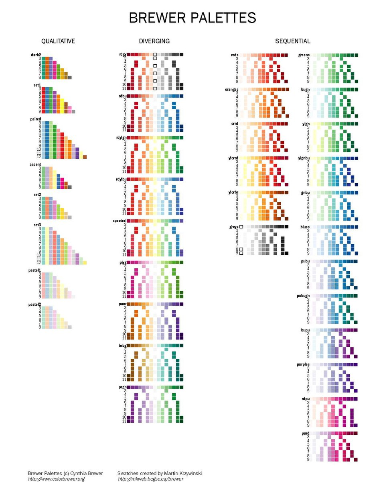
Conclusion: The Master Color Playbook
WCAG 2.1 Accessibility & Colorblind Inclusivity
Design is not truly functional unless accessible to everyone. The Web Content Accessibility Guidelines (WCAG) mandate: 1) Level AA Minimum Contrast: 4.5:1 ratio for regular text, 3.0:1 for large headings; 2) Level AAA Enhanced: 7.0:1 ratio. Because 8% of males experience color vision deficiency (Deuteranopia red-green blindness), never convey information using color alone; always pair color with text, icons, or texture.
The 5 Immutable Laws of Color Mastery
1) Value Precedes Color: Grayscale contrast dictates legibility; 2) Temperature Directs Attention: Warm advances, cool recedes; 3) Harmony Governs Emotion: Anchor in geometry rather than guesswork; 4) Respect the Physical Medium: RGB light for screens, CMYK pigments for paper; 5) Protect the 60-30-10 Hierarchy: Keep 60% neutral so your 10% accent commands instant conversion.
Classroom Checkpoint: The Final Design Challenge
If a corporate client demands a high-energy neon yellow brand color, how does an elite designer ensure their mobile application passes international accessibility laws?
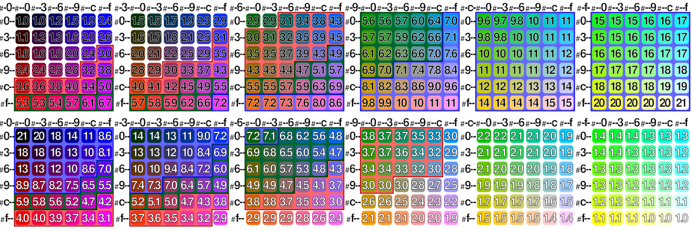